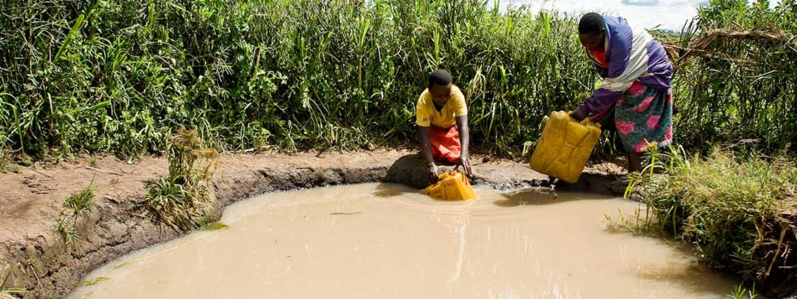
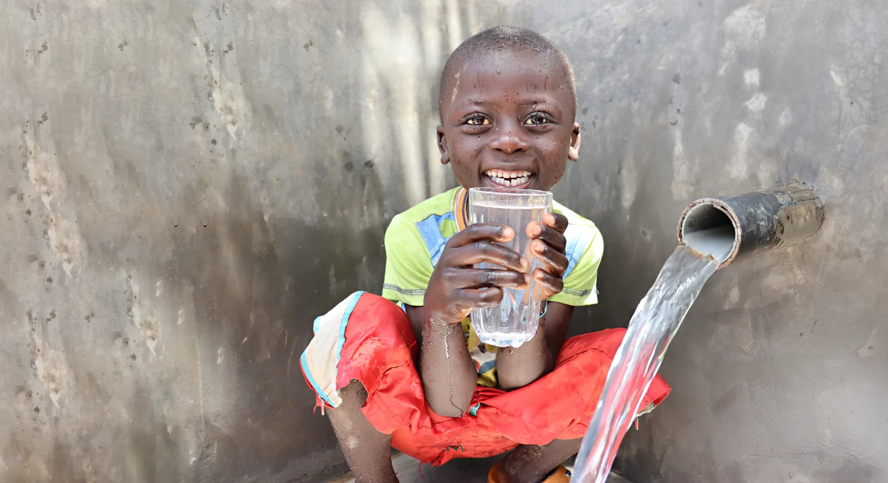

Water Scarcity & The Importance of Water
Learn about access to water and the global water shortage
Clean, safe drinking water is scarce. Today, nearly 1 billion people in the developing world don't have access to it. Yet, we take it for granted, we waste it, and we even pay too much to drink it from little plastic bottles.
Water is the foundation of life. And still today, all around the world, far too many people spend their entire day searching for it.
In places like sub-Saharan Africa, time lost gathering water and suffering from water-borne diseases is limiting people's true potential, especially women and girls.
Education is lost to sickness. Economic development is lost while people merely try to survive. But it doesn't have to be like this. It's needless suffering.
The Water Project provides access to clean, safe and reliable water across sub-Saharan Africa.
Your gift of $34 will change a life.
What is Water Scarcity?
More than just a lack of water...
Simply put, water scarcity is either the lack of enough water (quantity) or lack of access to safe water (quality).
It's hard for most of us to imagine that clean, safe water is not something that can be taken for granted. But, in the developing world, finding a reliable source of safe water is often time-consuming and expensive. This is known as economic scarcity. Water can be found...it simply requires more resources to do it.
In other areas, the lack of water is a more profound problem. There simply isn't enough. That is known as physical scarcity.
The problem of water scarcity is a growing one. As more people put ever-increasing demands on limited supplies, the cost and effort to build or even maintain access to water will increase. And water's importance to political and social stability will only grow with the crisis.
Your school, small group or even a few friends can make a huge difference!

Access to Clean Water Improves...

Education
With water right on school property, students won’t miss class to quench their thirst, clean their classrooms, or supply school
kitchens with water. With water at home, kids don’t waste homework time walking long distances in search of water
for their households.

Health
Water projects close to home rescue people from drinking whatever dirty water they can find. More water also means less rationing,
so it’s easier to stay hydrated, wash hands, and clean homes, preventing future illnesses.

Hunger
In our service areas, almost everyone has a farm or garden. To
them, a lack of water means a lack of food. Improved crop
irrigation equates to healthier and more plentiful crops.

Poverty
Sourcing water when it’s scarce day after day saps everyone’s time and energy. With water at their fingertips, people spend more time investing in their households and livelihoods.